KOTG
Redesigning how Deloitte C&M practitioners report project health — turning a monthly compliance chore into a two-minute, honest check‑in.
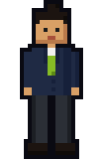
Manager
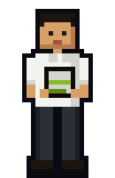
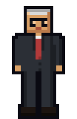
Leadership
One portal, every project's pulse.
KOTG is C&M's Project Master — every practitioner searches, creates and tracks projects here, and it turns their data into reports & dashboards for QRMs and leadership.
The problem: every project fills the same ~50–60 question form — a crisis and a "Healthy" project get identical treatment. That's not reporting, it's paperwork people learn to rush through.
What's not working well.
Once the first version of KOTG was in daily use, the complaints converged fast — not abstract UX critique, but specific friction hit every single month.
Every section sat open at once — forcing PMs to process the whole form before answering a single question.
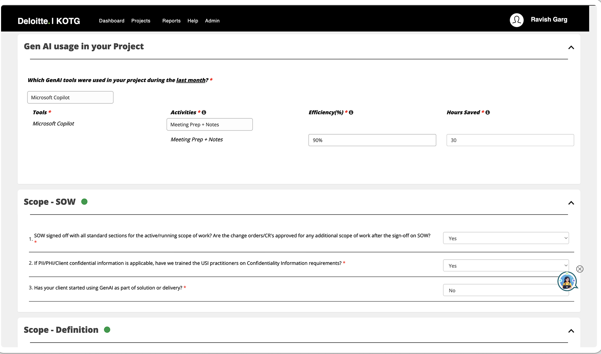
20+ fields in one dense, unsectioned scroll. Filling it out felt like transcription, not decision-making.
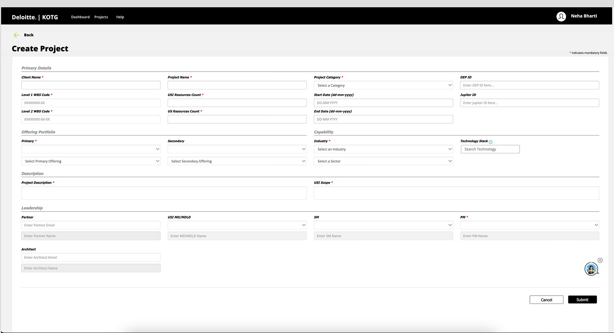
Each month's status lived as a free-text blob — captured once, then effectively locked away.
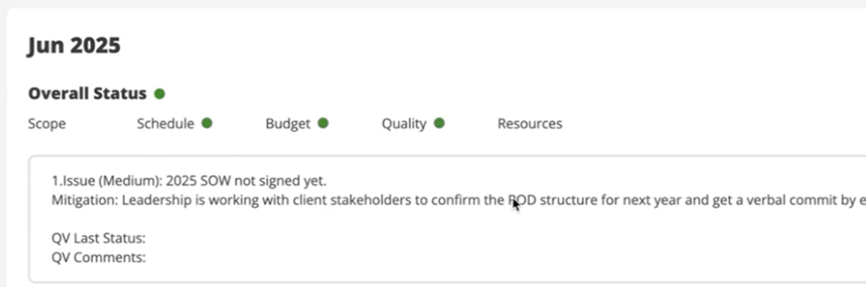
Buried in browser tabs and bookmarks — leadership saw only a delayed, filtered slice through intermediaries.
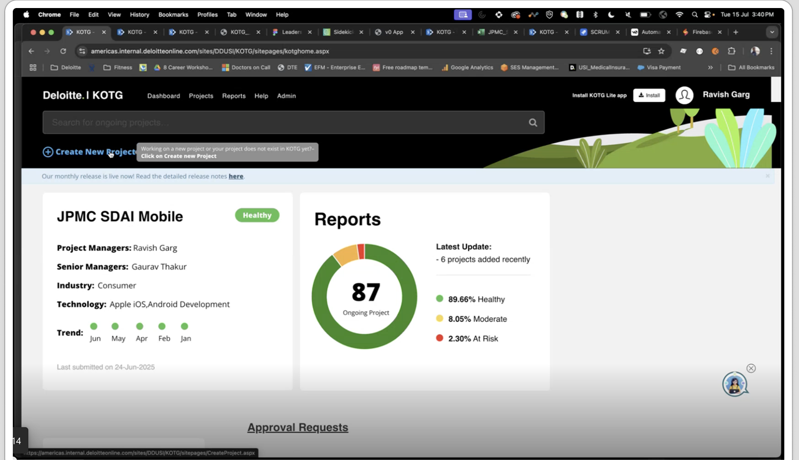
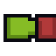
Add to that: no reminder before a snapshot came due, and no way to generate a report scoped to what you actually needed — the result was real time lost, every month.
Nine conversations, three very different days.
We ran contextual inquiries across five cities — watching Project Managers, QRMs and Leadership use KOTG in real time — then built these three personas around what we heard.
- Filling a lengthy, unrelated form every month gets tedious.
- No incentive for maintaining a green status — updating KOTG brings no real sense of accomplishment.
- Questions are hard to understand, with no help text provided.
- Building the report's Excel sheet by hand every cycle is a tedious manual job.
- Picking which red projects to escalate to the MD is a manual, judgment-heavy call.
- Some PMs under-report status out of fear of ending up in "the bad books."
What we shipped.
Four changes, each answering a specific thing we heard in research — not a redesign for its own sake.
Cleaner User Interface
"We got rid of all the clutter, so you can focus on what really deserves your attention."
- Colour-coded health trends — Healthy, At Moderate Risk, At Risk, readable across every past month at a glance.
- Action-focused dashboard — the only thing competing for attention is what's actually due.
- One consistent visual language carried through every project card, not just the homepage.
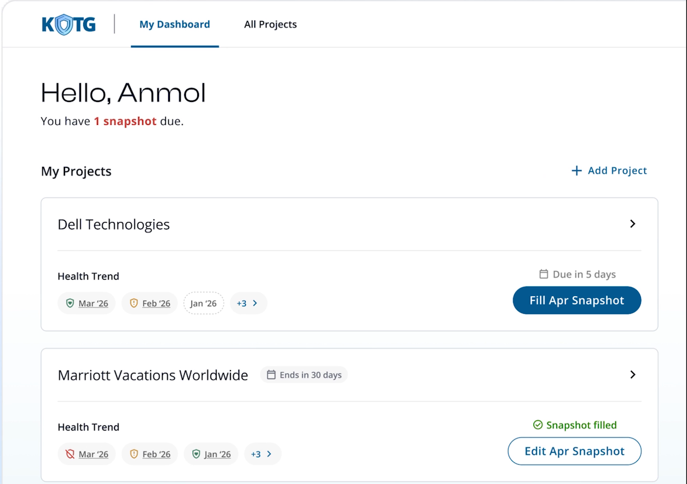
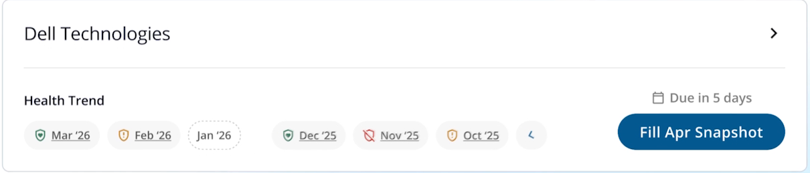
Faster Snapshot Filling
"Your snapshot comes pre-filled now — just answer if there are any new changes."
- Pre-filled from last month — review, don't re-type, unless something actually changed.
- Six clear steps — Project Summary through Risks & Assurance — instead of one long scroll.
- Save drafts and pick up mid-form later without losing progress.
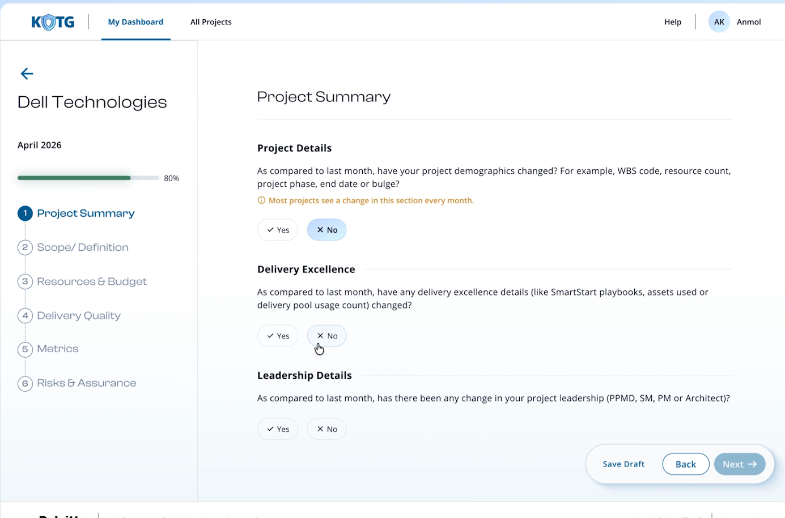
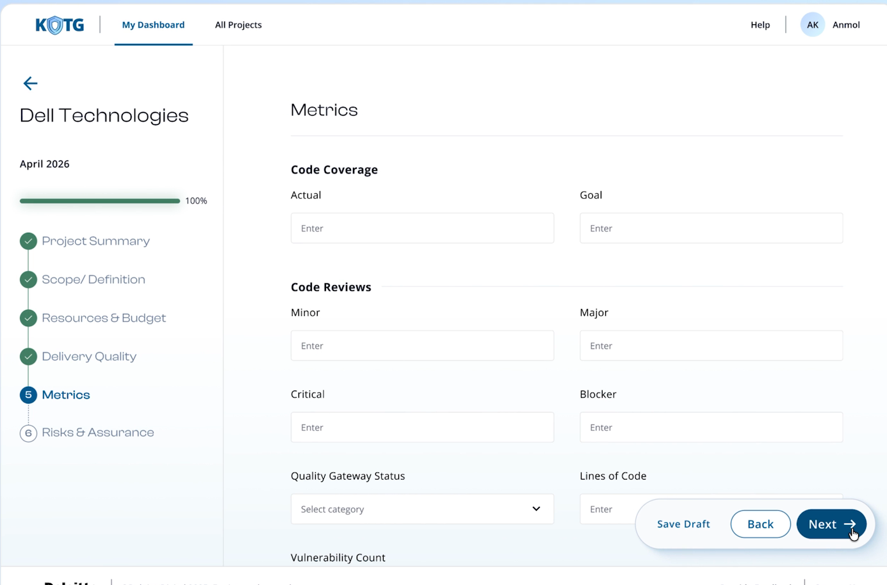
Badges & Streaks
"Fill your snapshots every month and build streaks — earn milestone badges every quarter."
- Real milestones — Commitment Captain, Navigational Northstar, Trust Titan, Reliability Pillar.
- Personalised, downloadable badge cards — recognition, not just a compliance record.
- A visible streak turns a monthly obligation into a small win worth protecting.
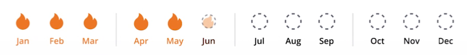
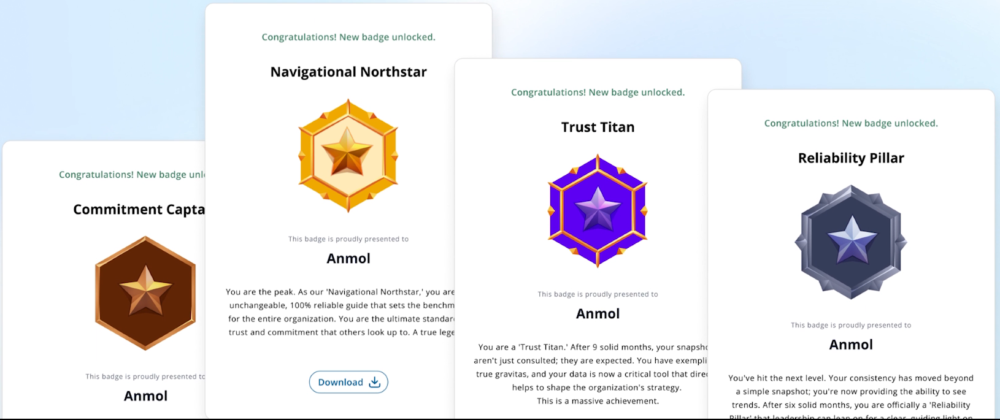
Go Mobile
"Access KOTG on your fingertips."
- Same six-step flow, same pre-filled data — fill a snapshot between meetings, not just at a desk.
- Full feature parity with desktop, not a stripped-down view.
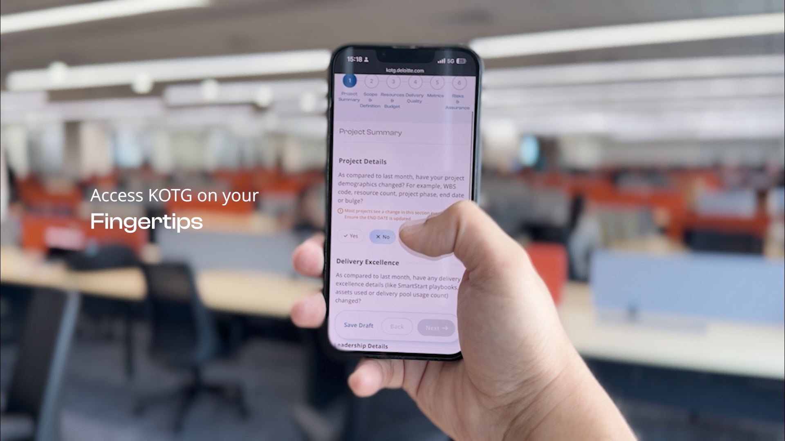
The numbers moved with the product.
User testing.
Once the redesign shipped, we sat down with the people actually using it — Project Managers, Senior Managers and QRMs — and watched them work through a live snapshot. Here's what they told us, in their own words.
Future scope.
The results validated the approach, so we kept applying it. Two more refinements, already prototyped on the same principle: ask less, signal more.
A binary Yes/No collapsed nuance into noise. A 1–5 scale keeps the same one-question footprint, but gives QRMs an actual gradient of risk to act on.
Project Summary sat as its own full step — six fields to review before you could even start the snapshot. Replaced with a single confirm modal: review what's pre-filled, edit only what changed, done.